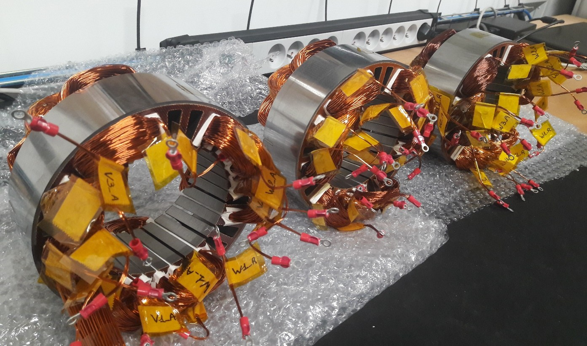
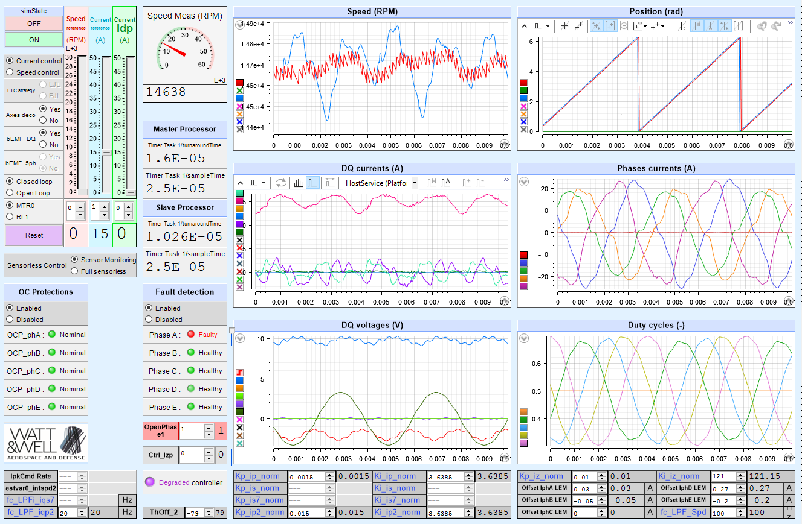
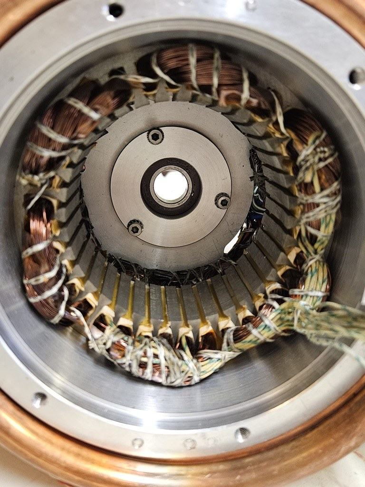
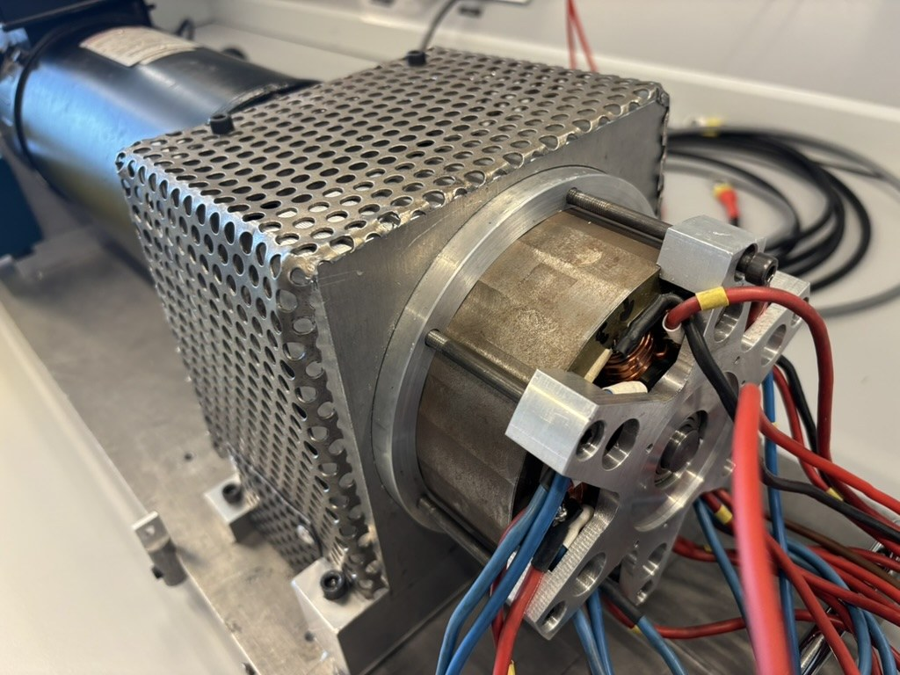

Axis 1
Machines, transducers and conversion chains
New transducer concepts and resilient traction chains for embedded systems.
- CTAF
- flux-switching machines
- multi-source architectures
Design, modelling, control and optimisation of electromechanical conversion chains for mobility, electrical grids and sustainable energy systems.
The TeSE team develops methods, models and experimental platforms to design, optimise and control next-generation electromechanical systems.




The team website complements SATIE’s institutional website. It highlights TeSE’s scientific activities, facilities and members while clearly directing visitors to SATIE for the overall organisation, official news, supervising institutions, directory and practical information.
TeSE is a SATIE research team specialising in transducers, electrical machines, electromechanical conversion chains, advanced control and energy systems.
Its work covers the full scientific chain: from machine or actuator concepts to modelling, optimal design, real-time control, diagnosis and experimental validation. The team addresses key challenges in energy transition, electric mobility, advanced air mobility and sustainable electrical grids.
The activities are presented with a clear institutional layout, close to a laboratory presentation page.
New transducer concepts and resilient traction chains for embedded systems.

Analytical, semi-analytical, finite-element and optimisation methods for machine design.
Advanced control, real-time simulation, digital twins and diagnosis of energy systems.
The facilities connect models, prototypes, measurements and real-time control.




The homepage highlights projects without excessive visual effects.
A low-voltage, resilient traction-chain concept compatible with source hybridisation. The TeSE presentation mentions 2 patents, 15 publications and 3 defended PhD theses.
Software developed with Stellantis since 2017 for vehicle-level optimisation of electric machines and traction chains.
The logos below are lightweight institutional markers and can be replaced by validated official files.